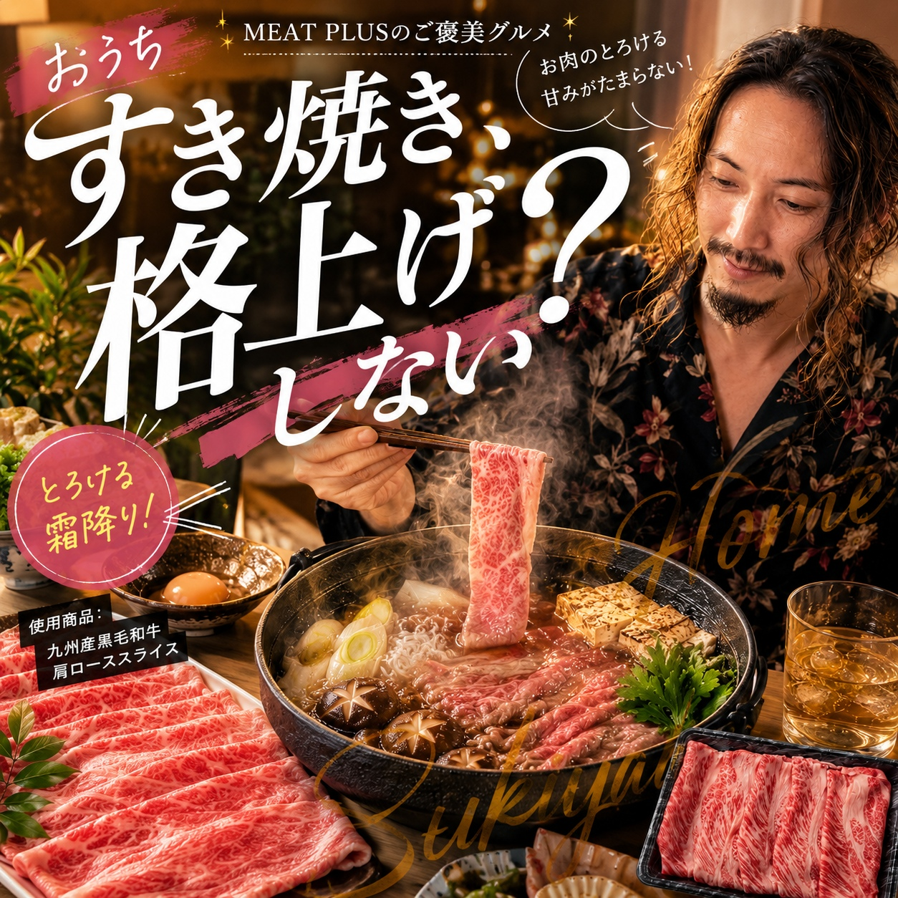
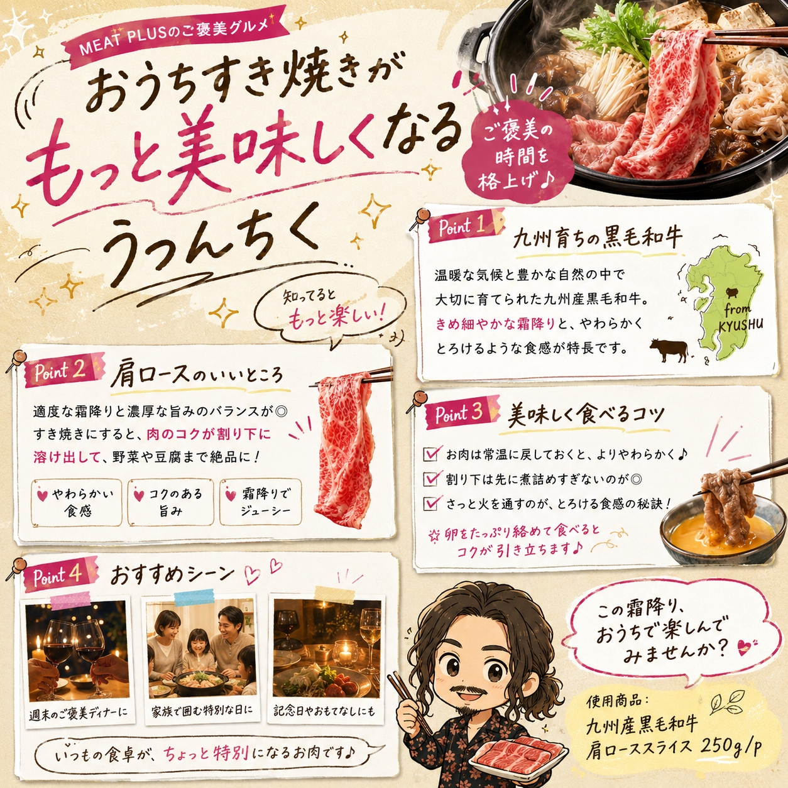
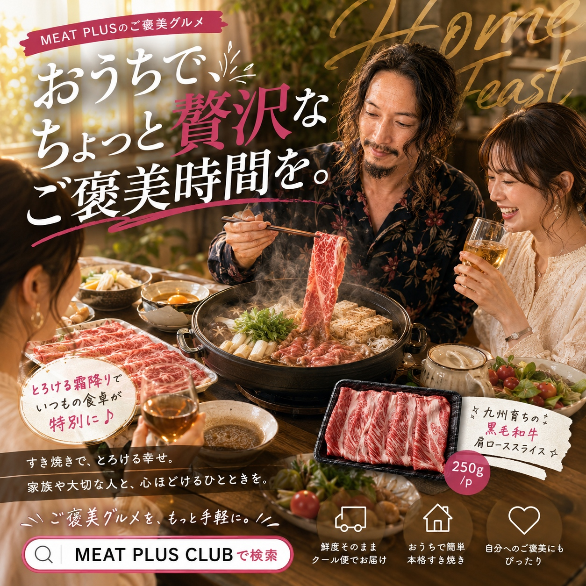

SCENE 01

a 牛肉
とろける霜降り、九州の恵み。食卓が贅沢になる黒毛和牛。
今夜はちょっと贅沢に、家族みんなで笑顔がこぼれる食卓を囲みませんか？九州の豊かな自然に育まれた、A4～A5等級の黒毛和牛肩ローススライスをお届けします。きめ細やかな霜降りが織りなす、とろけるような舌触りと、赤身のしっかりとした旨味のバランスが絶妙な逸品です。すき焼きにすれば、割り下の甘辛い風味と和牛の濃厚なコクが絡み合い、口いっぱいに幸せが広がります。しゃぶしゃぶでは、さっとお湯にくぐらせるだけで、お肉本来の繊細な甘みと風味を存分にお楽しみいただけます。使いやすい250gのパックなので、ご夫婦でのお祝いディナーや、もう一品贅沢を加えたい時にもぴったり。冷凍庫にストックしておけば、いつでも手軽にごちそうメニューが完成します。この一枚が、あなたの大切な人との食卓を、忘れられない特別な時間に変えてくれるはずです。ぜひ、九州が誇る黒毛和牛の豊かな味わいをご堪能ください。
公式サイトへ移動します。価格・在庫・配送条件は移動先で最終確認してください。



PRODUCT INFORMATION
牛肩ロース（国内産黒毛和種）
MEAT PLUS OFFICIAL SHOP
仕入れ・加工・梱包・発送まで自社で行うMEAT PLUSの公式オンラインショップでご注文いただけます。
公式オンラインショップで購入する